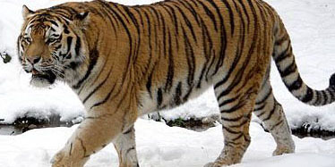

Hổ Amur
1.Tổng quan
Hổ Siberi hoang dã, được mệnh danh là "Chúa tể của rừng Taiga", ngoài tên hổ Siberi thì loài này còn có tên hổ Amur, hổ Triều Tiên, hổ Ussuri hay hổ Mãn Châu, là một phân loài hổ sinh sống chủ yếu ở vùng núi Sikhote-Alin ở phía tây nam tỉnh Primorsky của vùng Viễn Đông Nga. Trong quá khứ, loài hổ này từng phân bố khắp bán đảo Triều Tiên, Đông Bắc Trung Quốc, Viễn Đông của Nga và phía Đông Mông Cổ. Vào năm 2005, có khoảng 331-393 loài hổ Siberia trưởng thành và chưa trưởng thành ở khu vực này, với cá thể trưởng thành là khoảng 250 con. Quần thể đã ổn định trong hơn một thập kỷ do các nỗ lực bảo tồn chuyên sâu, nhưng một phần cuộc điều tra được tiến hành sau năm 2005 cho thấy số lượng hổ ở Nga đang giảm. Một cuộc điều tra ban đầu được tổ chức vào năm 2015 cho thấy quần thể hổ Siberia đã tăng lên 480–540 cá thể ở vùng Viễn Đông, trong đó bao gồm 100 con hổ con. Điều này được theo dõi bởi một điều tra chi tiết hơn cho thấy có tổng cộng 562 cá thể hổ Siberia hoang dã ở Nga.
2.Kích thước
Hổ Siberia được coi là loài hổ lớn nhất. Trong các nguồn thống kê lịch sử cụ thể đề cập đến kích thước cơ thể và trọng lượng của hổ Siberi. Một con hổ đực hoang dã bị giết ở Mãn Châu trong khu vực sông Sungari vào năm 1943 được báo cáo là dài đến 3,5 m (140 in) "trên các đường cong", tương đương với 330 cm (130 in) "giữa các chốt" với chiều dài đuôi khoảng 1 m (39 in). Nó nặng khoảng 300 kg (660 lb). Trọng lượng chưa được xác định giữa 318 và 384 kg (701 và 847 lb) và thậm chí 408 kg (899 lb) đã được nêu trong các nguồn không rõ ràng. Một bằng chứng chưa được xác nhận đề cập đến một con hổ đực ở dãy núi Sikhote-Alin vào năm 1950 đượ báo cáo nặng 384 kg (847 lb) với chiều dài ước tính 3,48 m (11,4 ft). Một con hổ Siberia bị giam cầm tên là "Jaipur" được cho là đạt trọng lượng cơ thể lên đến 465 kg (1.025 lb). Trong những năm 1980, phạm vi trọng lượng điển hình của hổ Siberia hoang dã được chỉ định là 180–306 kg (397–675 lb) đối với con đực và 100–167 kg (220-368 lb) đối với con cái. Các cá thể đặc biệt lớn được nhắm mục tiêu và săn bắn bởi thợ săn. Năm 2005, một nhóm các nhà động vật học Nga, Mỹ và Ấn Độ đã công bố một phân tích dữ liệu lịch sử và đương đại về trọng lượng cơ thể của những con hổ hoang dã và bị giam giữ, cả đực lẫn cái trên tất cả các phân loài. Dữ liệu được sử dụng bao gồm trọng lượng của hổ đã lớn hơn 35 tháng và được đo lại bằng sự hiện diện của các chuyên gia. So sánh của họ với dữ liệu lịch sử chỉ ra rằng đến nửa đầu thế kỷ 20, cả hổ đực và cái Siberi đều nặng hơn những thống kê trong những năm 1970s. Con hổ Siberia hoang dã lịch sử trung bình nặng 215,3 kg (475 lb) và con cái cái 137,5 kg (303 lb); Hổ đực Siberia hoang dã đương đại nặng trung bình 176,4 kg (389 lb) với giới hạn tiệm cận là 222,3 kg (490 lb); một con cái hoang dã nặng trung bình 117,9 kg (260 lb). Loài hổ Siberi lịch sử và hổ Bengal là loài hổ lớn nhất, trong khi hổ Siberian hiện đại thì có phần nhẹ hơn loài hổ Bengal. Việc giảm trọng lượng cơ thể của hổ Siberi ngày nay có thể được giải thích bằng nguyên nhân đồng thời, cụ thể là sự săn bằn tràn lan, săn bắt bất hợp pháp và các cá thể thường bị bệnh hoặc bị thương và thậm chí bị bắt trong tình huống xung đột với con người. Các phép đo kích thước loài hổ này được thực hiện bởi các nhà khoa học của Dự án Hổ Siberia trong dãy núi Sikhote-Alin là từ 1,78 đến 2,08 m (70 đến 82 in) ở đầu và thân dài đo bằng đường thẳng, trung bình 1,95 m (77 in) đối với đực; và đối với nữ từ 1,67 đến 1,82 m (66 đến 72 in) với trung bình 1,74 m (69 in). Chiều dài đuôi trung bình đo được là 99 cm (39 in) ở đực và 91 cm (36 in) ở cái. Con đực dài nhất đo được là 3,9 m (122 in) với chiều dài tổng cộng gồm đuôi dài 101 cm (40 in) và chu vi ngực là 127 cm (50 in). Con cái dài nhất dài 2,7 m (110 in), bao gồm đuôi dài 88 cm (35 inch) và chu vi ngực 108 cm (43 inch). Một con đực bị bắt bởi các thành viên của Dự án Hổ Siberia nặng 206 kg (454 lb), và con đực có dây đeo lớn nhất nặng 212 kg (467 lb).

3.Sinh sản và lối sống
Loài hổ Siberia được biết là có thể di chuyển lên tới 1.000 km (620 mi), một khoảng cách đánh dấu giới hạn giao lưu trên đất nước không bị gián đoạn về mặt sinh thái. Hổ Siberian giao phối bất cứ lúc nào trong năm. Một con cái báo hiệu khả năng giao phối với đối tác của mình bằng cách để lại nước tiểu và vết cào trên cây. Nó sẽ dành 5 hoặc 6 ngày với con đực, trong thời gian đó con cái sẽ giao phối trong ba ngày. Thời gian mang thai kéo dài từ 3 đến 3½ tháng. Hổ cái thường đẻ 1 lứa khoảng hai đến bốn con nhưng có thể đến sáu con. Những con non được sinh ra chưa mở mắt sẽ luôn được hổ mẹ che chở và được chỉ để lại một mình khi nó rời khỏi đàn con để tìm kiếm thức ăn. Hổ con được chia đều giữa các giới tính khi sinh. Tuy nhiên, theo tuổi trưởng thành thường có từ hai đến bốn con cái đối với mỗi con đực. Đàn con cái vẫn sống với mẹ của chúng lâu hơn, và sau đó chúng thiết lập lãnh thổ gần với phạm vi ban đầu. Mặt khác, những con đực sẽ rời mẹ và sống tự lập, khiến chúng dễ bị tổn thương hơn với những kẻ săn trộm và những con hổ khác.